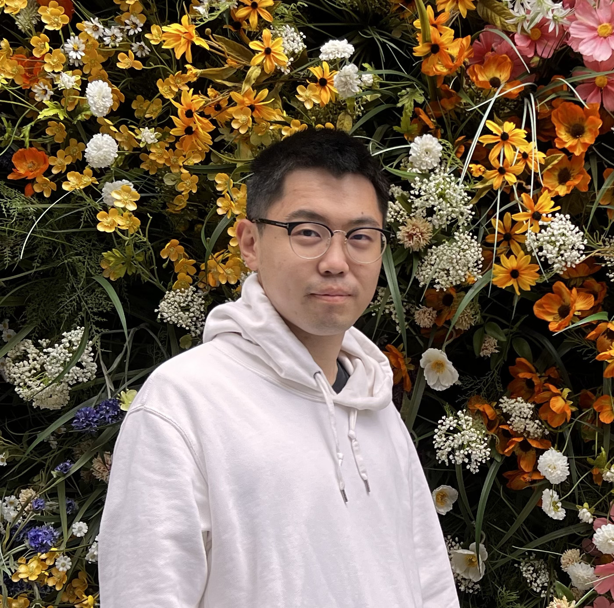
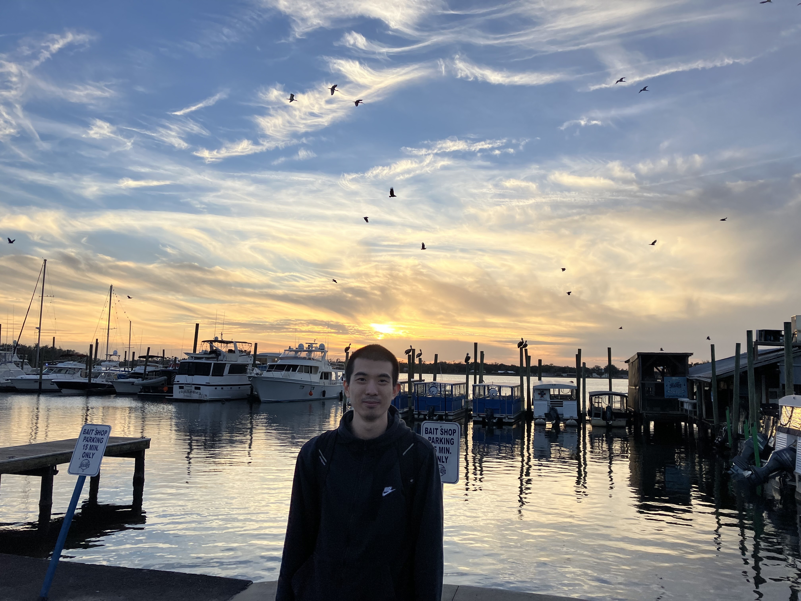

<!-- Start of Group-->
<section class="resume-section p-3 p-lg-5 d-flex align-items-center" id="group">
<div class="w-100">
<h2 class="mb-4">Data Driven Decision Intelligence (D^3i) Lab </h2> 

    <style>
        .member {
            display: flex;
            align-items: center;
            margin-bottom: 20px; /* Adjust the spacing as needed */
        }

        .member img {
            border-radius: 50%;
            max-width: 150px; /* Adjust the size as needed */
            height: auto;
            margin-right: 15px; /* Adjust the spacing between image and text */
        }
    </style>
	
    <div class="group" id="faculty">
        <h3><strong>Faculty</strong></h3>
        <div class="member">
             
	    <br>
            <p><strong><a href="https://haipeng-chen.github.io/">Haipeng Chen</a></strong><br>
	    Assistant Professor, William & Mary<br>
	    Contact: hchen23@wm.edu <br>
	    </p>
        </div>
    </div>

    <div class="mb-3" id="phd">
        <h3><strong>PhD Students</strong></h3>

        <div class="member">
	    
	    <br>
            <p><strong><a href="https://littlestone111.github.io/">Yang Li</a></strong> (Fall 2023 - )<br>
	    Research interests: Reinforcement Learning, Generative AI, Health<br>
	    Education: BS@UCSD (Honors), MS@Columbia <br>
	    Contact: yli102@wm.edu <br>
	    </p>
    	</div>

	    <div class="member">
	    
	    <br>
            <p><strong>Chenan Wang</strong> (Fall 2024 - )<br>
	    Research interests: Machine Learning<br>
	    Education: BS@Northeastern (Honors), MS@Drexel <br>
	    Contact: cwang33@wm.edu <br>
	    </p>
    	    </div>

            <div class="member">
	    
	    <br>
            <p><strong><a href="https://dearhannah.github.io/">Han Meng</a></strong> (Fall 2024 - ) <br>
	    Research interests: AI4Science <br>
	    Education: BS@USTB (5/360), MS@MSU <br>
	    Contact: miss.menghan@gmail.com <br>
	    </p>
    	    </div>
    </div>

    <div class="group" id="masters">
        <h3><strong>Masters Students</strong></h3>
        <ul>
	    <li><strong>Jianing (Julia) Chen</strong> (MS@USC)</li>
            <li><strong>Tao Feng</strong> (MS@Edinburgh)</li>
            <li><strong>Xinsong Feng</strong> (MS@UCLA)</li>
	    <li><strong>Shuoqiu Li</strong> (MS@CMU)</li>
            <li><strong>Yuheng Li</strong>(RA@WM)</li>
            <li><strong>Panpan Wang</strong>(RA@WM)</li>
	    <li><strong>Han Xu</strong> (MS@UIUC)</li>
	    <li><strong>Bo Yu</strong> (MS@WPI)</li>
        </ul>
    </div>

    <div class="group" id="undergraduates">
        <h3><strong>Undergraduate Students</strong></h3>
        <ul>
	    <li><strong>Jimmy Bach</strong> (BS@W&M, co-advised with Carrie Dolan)</li>
            <li><strong>Isabella (Fangzhi) Li</strong> (BS@W&M)</li>
            <li><strong>Yaqi Liu</strong> (BS@W&M)</li>
            <li><strong>Zihan Yu</strong> (BS@BJTU)</li>
        </ul>
    </div>

    <div class="group" id="alumni">
        <h3><strong>Alumni</strong></h3>
        <ul>
            <li><strong>Yaolong Yu</strong> (BS@SDU, now RA@CUHK)</li>
        </ul>
    </div>
</div>	   

</section>
